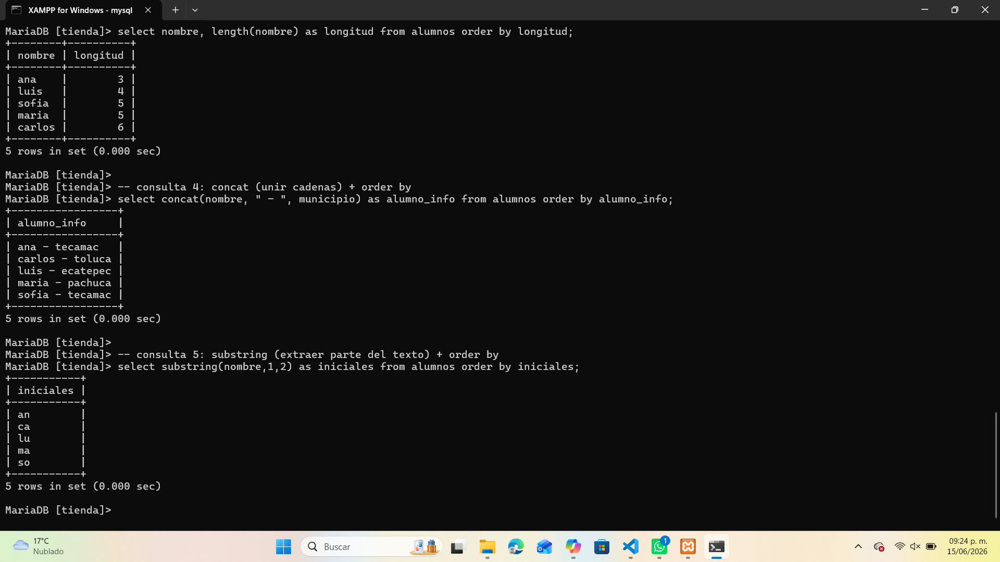
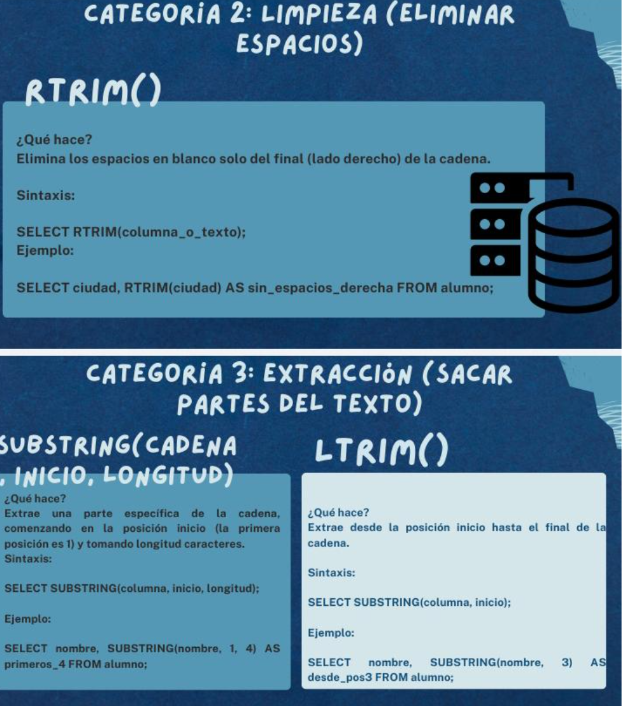

Funciones de Texto en SQL
Las funciones de texto permiten manipular cadenas dentro de una base de datos. Se usan para medir, unir, limpiar o extraer partes de los textos almacenados en las columnas.
Medición de texto
La función LENGTH() devuelve la cantidad de caracteres de una cadena.
SELECT nombre, LENGTH(nombre) AS longitud
FROM alumnos
ORDER BY longitud;Resultado: muestra el número de letras de cada nombre.
Unión de cadenas
La función CONCAT() permite unir dos o más textos en una sola cadena.
SELECT CONCAT(nombre, ' - ', municipio) AS alumno_info
FROM alumnos
ORDER BY alumno_info;Resultado: combina nombre y municipio en una sola columna.
Extracción de texto
La función SUBSTRING() extrae una parte específica del texto según la posición y longitud indicadas.
SELECT SUBSTRING(nombre, 1, 2) AS iniciales
FROM alumnos
ORDER BY iniciales;Resultado: muestra las dos primeras letras de cada nombre.
Ejemplo práctico en MySQL
En este ejemplo se aplican las funciones LENGTH(), CONCAT() y SUBSTRING() para analizar y ordenar datos de texto:

Infografía general

Otras funciones útiles
| Función | Descripción | Ejemplo SQL |
|---|---|---|
| RTRIM() | Elimina los espacios en blanco del final de la cadena. | SELECT RTRIM(ciudad) FROM alumnos; |
| LTRIM() | Elimina los espacios en blanco del inicio de la cadena. | SELECT LTRIM(nombre) FROM alumnos; |
| CONCAT_WS() | Une cadenas usando un separador definido. | SELECT CONCAT_WS('-', nombre, municipio) FROM alumnos; |
Recomendaciones
- Usa LENGTH() para validar la longitud de datos como contraseñas o códigos.
- Aplica CONCAT() para crear textos combinados o etiquetas.
- Utiliza SUBSTRING() para obtener iniciales o partes específicas del texto.
- Emplea RTRIM() y LTRIM() para limpiar espacios innecesarios.
- Combina estas funciones con ORDER BY para organizar los resultados.